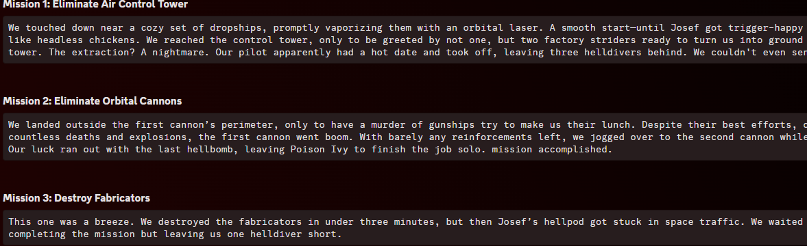
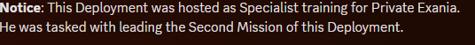

This will be a short course or Reminder on how to create and manage Departure Notices. If you have any Questions after this please feel free to message your Commanding Officer and if they are not reachable the Person above them.
This Guide will be split into 2 Parts:
Tallie Formatting:
Potential Templates:
There are 2 given ways to write a Tallie. One is with a direct Message in the Discord following a given Template for the Header that will be discussed in a later point. This will require you to write each Mission separately as its own Report such as

In here you can see that the Tallie is split up into 3 Different Sections with a Mission Report for every Mission. If you need any help or ideas for writing a Tallie there is also a Template pinged in the channel made by Battalion General Mind: 101ST MISSION REPORT
The other way is to use a google docs template made by previous Sergeant Major Raisin, where basically everything is given. If you need any help with it feel free to check out Tallies made by other people. Do keep in mind that this version still needs the Header and will also not work properly if you do it on your Phone. You can find this Version in the pins of the Tallie Channel aswell: The Expendables, Team #2 SITREP.
Feel free to make a copy of this and Edit it to fit your Deployment.
Deployment Header:
The 101st has a specific Deployment header that is supposed to look almost identical every single time this header looks like this:
## OPERATION REPORT
Operation: "Operation Name"
Year-Month-Date (Time in UTC+2 24 Hour Clock)
Difficulty: T?
Location: Planet
Squad Leader:
@Yourself
Squad:
@Diver1
@Diver2
@Diver3
You are requested to put this Header above every Tallie no matter what kind of tallie.
Mission Reports:
Mission Reports are made for each individual Mission. You are free to write this however long you want, there is a minimum you shouldn’t go under which is about 6 Sentences and about 3 Lines. Make sure that the Mission Reports never end up too short. You are free to write basically anything in it that happened in the Mission, just make sure to write it in a Roleplay like fashion and make it look like an actual mission report.
Additional Information:
You are also free to add additional Information to your Tallie that you think might be important to know. For example if there is a special Theme or purpose on the Deployment feel free to make an extra section above the Mission reports to inform the reader of said purpose. For example if you are hosting a Specialist training Deployment you could add something like this:

You could also add a few notes at the bottom about how the Deployment went and the specific performance of the Members within said deployment:
These are optional but are always nice to see in Tallies.
Tallie Rules:
Rules for Information:
As stated above there is a necessary amount of Information to be given within a Tallie.
You are always required to make 3 Mission Reports and make these Mission Reports at least 6 Sentences and about 3 Lines. If you do not follow these rules you will be asked to redo the tallie to make it count for attendance. The Header will also always be necessary. A tallie without a header will not be accepted and you will be notified of your mistake which you will need to fix.
If you do not fix it you will be getting any points from said Deployment.
Rules for Attendance:
In a Deployment you might encounter someone being unable to finish the entire Deployment and has to leave for example after the second mission and you have to call in a Backup.
Let’s say Diver1 wasn’t able to finish the Deployment due to his Wifi going out and
Diver2 had to jump in in order to finish the Deployment.
Since Diver1 left before the Deployment was finished he will not be awarded any attendance Points for this deployment and his Point will be given to Diver2 since he replaced Diver1.
In your Tallie you will only be asked to Ping the people that actually finished the Deployment and Diver1 would not get mentioned within the Header:
OPERATION REPORT
Operation: “Operation Name”
Year-Month-Date (Time in UTC+2 24 Hour Clock)
Difficulty: T?
Location: Planet
Squad Leader:
@Yourself
Squad:
@Diver2
@random
@random
This concludes this guide on Deployment Tallies. I hope this helped and if you have any further Questions please ask your Commanding Officer with them.
Second Lieutenant Ain signing off